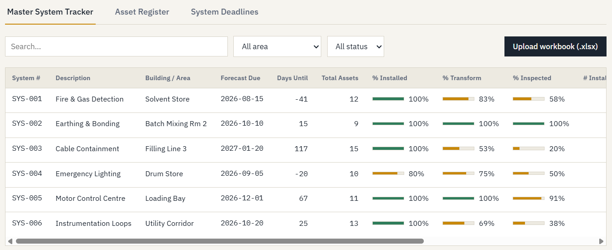
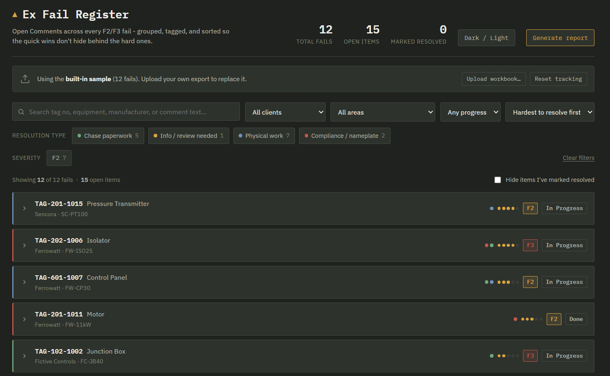
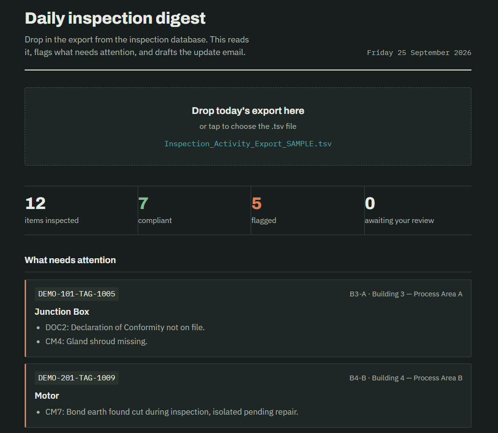

All three run entirely in your browser - nothing is sent anywhere. Sample data loads by default; each tool also accepts a real workbook upload if you want to see it populate from your own data (nothing you upload leaves your machine either).

System & Asset Tracker
Live demoA live equipment register and non-conformance log - replaces two static Excel workbooks and their manual XLOOKUP/COUNTIFS formulas with a browsable, filterable tool.
Open tool →

Ex Fail Register
Live demoBrowses and filters failed Ex inspections, reads each open comment into a resolution type, and sorts fails from easiest to hardest to close out.
Open tool →

Daily Inspection Digest
Live demoTurns a raw daily export into a plain-English summary - flags non-compliant items and drafts an email, ready to review and send.
Open tool →